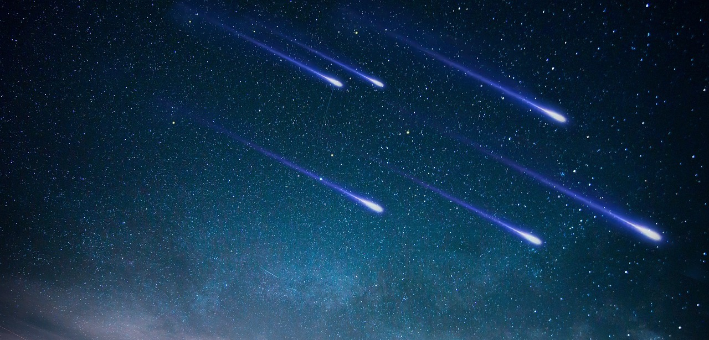

Souvězdí Labutě se na obloze nachází v oblasti Mléčné dráhy. Nejjasnější hvězda se nazývá Deneb, a je součástí letního trojúhelníku. Podle legendy se v Labuť proměňoval Zeus, když se chtěl podívat mezi lidi. V této podobě navštívil i spartskou královnu Ledu, o kterou se zajímal pro její krásu. Aby se k ní mohl přiblížit, nechal se pronásledovat obrovským orlem, před kterým ho spartská královna zachránila. Po Diově návštěvě Leda porodila blížence Castora a Polluxe, byla také matkou dvou dcer – Klytaimnéstry a krásné Heleny, kvůli které vypukla Trojská válka. Castorův a Klytaimnéstřin otec byl Ledin manžel Tyndareos, otcem Poluxe a Heleny byl Zeus.
Souvězdí Lyry patří mezi antická souhvězdí a nalézá se vedle Labutě. Nejjasnější hvězda tohoto souhvězdí, Vega, je současně 5. nejjasnější hvězdou na obloze. Souhvězdí Lyry se vztahuje k báji o Orfeovi, největším hudebníkovi řeckých legend. Orfeus byl syn Múzy Kalliopé. Za jeho otce báje nejčastěji považují boha Slunce a umění Apollóna, ale podle některých verzí byl Orfeovým otcem říční bůh Oigaros. Lyra je hudební nástroj, který vynalezl posel bohů Hermés. Ten prodal Lyru Apolónovi, který ji daroval svému synovi. Orfeus hrál na lyru a zpíval tak krásně, že okouzloval lidi, uchvacoval a uklidňoval zvěř a ptactvo, tišil přírodu a nastoloval v ní klid a mír. Bohové Orfea i s jeho lyrou umístili na oblohu.
Souhvězdí Orla je na obloze vidět od června až do konce roku. Nejjasnější hvězda Orla, jenž je zároveň součástí letního trojúhelníku, se nazývá Altair. Podle pověsti byl orel trestem pro Prométhea za to, že obelhal bohy. Pomohl lidem vytvořit lest, která bohy rozhněvala. Zeus za trest lidem odebrali oheň. Prométheus však chtěl lidem pomoci a tak jej ukradl z Olympu a daroval ho zpátky lidem. Zeus ho za trest nechal přikovat ke skále v pohoří Kavkaz. Aby toho nebylo málo každý den přilétl orel, který mu vykloval játra.
| Název | Maximum |
| Kvadrantidy | 5. ledna |
| Lyridy | 22. dubna |
| Perseidy | 12. srpna |
| Geminidy | 14. prosince |
